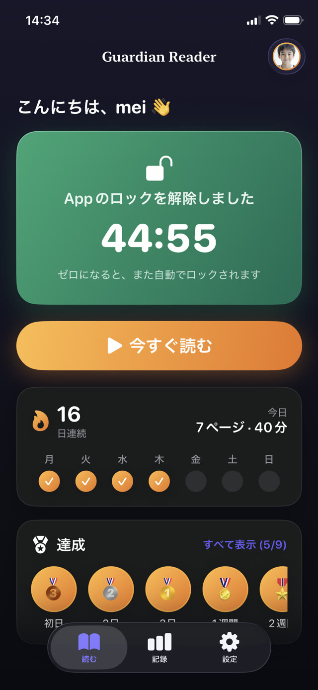

二つ目のほうが一緒に暮らしやすいのは、子どもがもうあなたと言い争っていないからです。子どもは、対価を払うほど画面が欲しいかどうかを決めているだけです。たいていの日は欲しいので、読書は起きます。


なぜ「与えられる」より「獲得する」が強いのか
ただ渡されたものは前提として扱われ、減らされれば罰のように感じられます。獲得したものはごほうびとして扱われ、まったく同じ長さのスクリーンタイムが急に気前よく見えます。
スクリーンタイムそのものは何も変わっていません。変わったのはその立場だけです。それがこの仕掛けのすべてで、「2時間ね」がいつのまにか「なんで2時間だけ？」になる場所で、この枠組みが生き残る理由です。
交換レートを決める
レートは、調子の悪い日でも達成できなければいけません。疲れた8歳が火曜の夜にこなせないなら、仕組みは壊れ、また言い争いに戻ります。
妥当な出発点です。1週間ようすを見てから調整してください。
- 4〜6歳：1ページ、約5分で、15分を解除。
- 7〜9歳：2ページ、約10分で、30分を解除。
- 10〜12歳：3ページ、約15分で、30〜45分を解除。
- ティーン：4ページ以上、約20分で、45分を解除。
みんなが軽く見る部分：確認
ごほうびの仕組みはどれも同じ場所で死にます。「読んだよ」と言えば足りると子どもが学んだ瞬間です。申告が実行と同じ価値を持ったら、その仕組みは形だけで、それは二人ともわかっています。
紙のシートも、善意に頼るアプリも、この穴を抱えています。あとから内容の質問をするだけのアプリも同じです。1ページについての質問は、当てずっぽうでも、ざっと見でも、挿絵からでも答えられることが多いからです。
解決策は、申告でも記憶でもなく、音読そのものを確認することです。
もちこたえるルール
静かに死ぬルールと生き残るルールを分けるのは、三つの性質です。
- 毎日あてはまること。へとへとで何も守らせたくない日も含めて。
- あなたが部屋にいることや、確かめようのない申告を信じることに依存しないこと。
- 明日も同じルールであること。一度でも交渉し直すと、ルールは交渉できるものだと教えることになります。
避けたい失敗
- 1日の目標を大きくしすぎて、失敗が普通になること。失敗はまれでなければ習慣は育ちません。
- 手伝い、宿題、読書を一つのポイント制にまとめること。伝えたいことがぼやけます。読書は独立した通貨のままに。
- スクリーンタイムをごほうびと罰の両方に使うこと。気分次第で取り上げられるなら、獲得する意味がなくなります。
- レートを交渉材料に変えること。動かないことこそが利点です。
Guardian Reader はどう守らせるか
Guardian Reader はまさにこの交換を中心に作られています。ロックするアプリ、1セッションのページ数、獲得できる分数を保護者が決めます。お子さまは本物の本のページを1ページずつ撮影し、まとめて音読します。
アプリは聞き取った内容とスキャンした本文を一語ずつ照合します。正直に読めば余裕で通ります。作り話も、口ごもりも、動画の再生も通りません。同じセッションですでにスキャンしたページは二度スキャンできません。獲得した分が終われば、アプリを閉じていてもアプリは自動で再びロックされます。